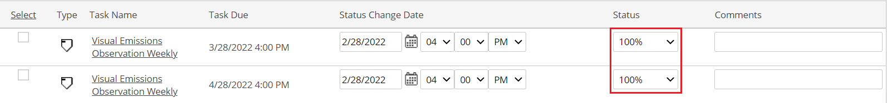
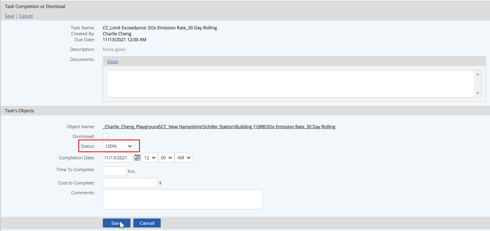

Completing a task consists of marking the task 100% complete and indicating its compliance status when completed. You may also add comments and, if appropriate, indicate time and cost to complete.
A task may be completed by any user who is a task assignee, either as an individual or member of an assigned group. It may also be completed by the task assignor or a member of the Adminstrators group.
Select the task shown in your assignments.
In the completion screen, status defaults to 100% with current date and time for completion. Comments are optional. Edit these fields if necessary. If other fields are visible, complete these as appropriate. (See "Optional Task Fields" below.)


The following are optional task fields:
Once a task is completed, the Compliance Period and Comply status fields may be viewed or edited only from the View/Edit Data page. The Time to Complete and Cost to Complete may be viewed or edited only from the View/Edit Tasks page.
If the task is related to an event, it may have extra fields to complete to document the event (such as cause, remediation actions, etc.). Complete the data fields related to the event, shown at the bottom of the task form.
If the Accept as Deviation field appears on the form, decide whether this event should be treated as a deviation:
For more information, see Completing an Event-Triggered Task.